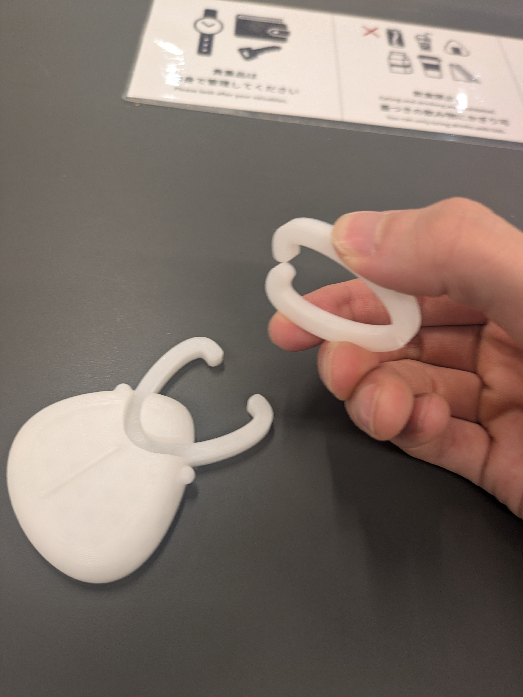
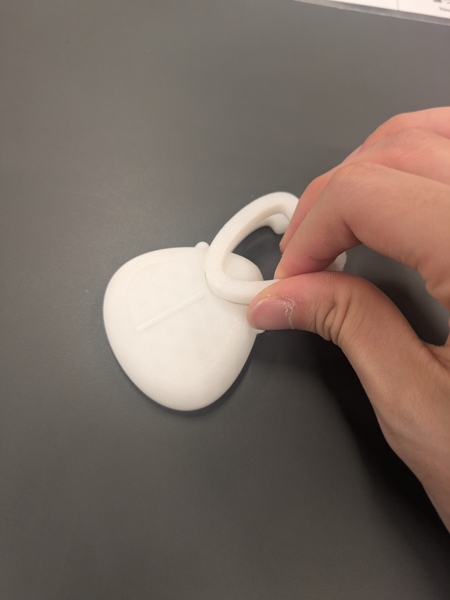

くわがたピンセット
Overview
くわがたの角の造形をヒントに、道具としても飾りとしても成立するオブジェを試作した回です。使う時はピンセット、閉じると置物になる二面性をテーマにまとめました。
Concept
発想のポイント
生き物らしいフォルムを残しながら、手に持った時の道具感も感じられるように整理しています。
角の形をそのまま機能へ — くわがたの角の開き方をつまむ動作へ置き換え、見た目の印象と使用感が自然につながるように考えました。
使わない時も魅せる — 単なる道具で終わらず、置いた時にも作品らしく見えるように、閉じた姿のバランスも重視しています。
Gallery
試作イメージ

ピンセットとして開く形
角の開き方をそのまま使い、先端でつまむ動作ができる構成にしています。

閉じると置物になる姿
パーツをはめると、昆虫らしいシルエットを保ったままオブジェとして置けます。